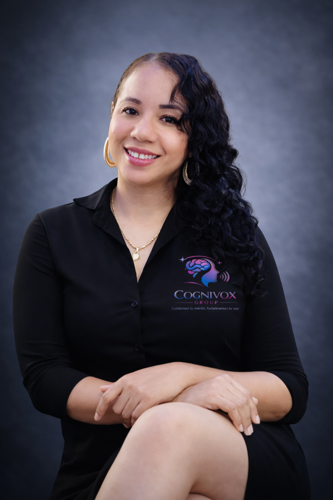
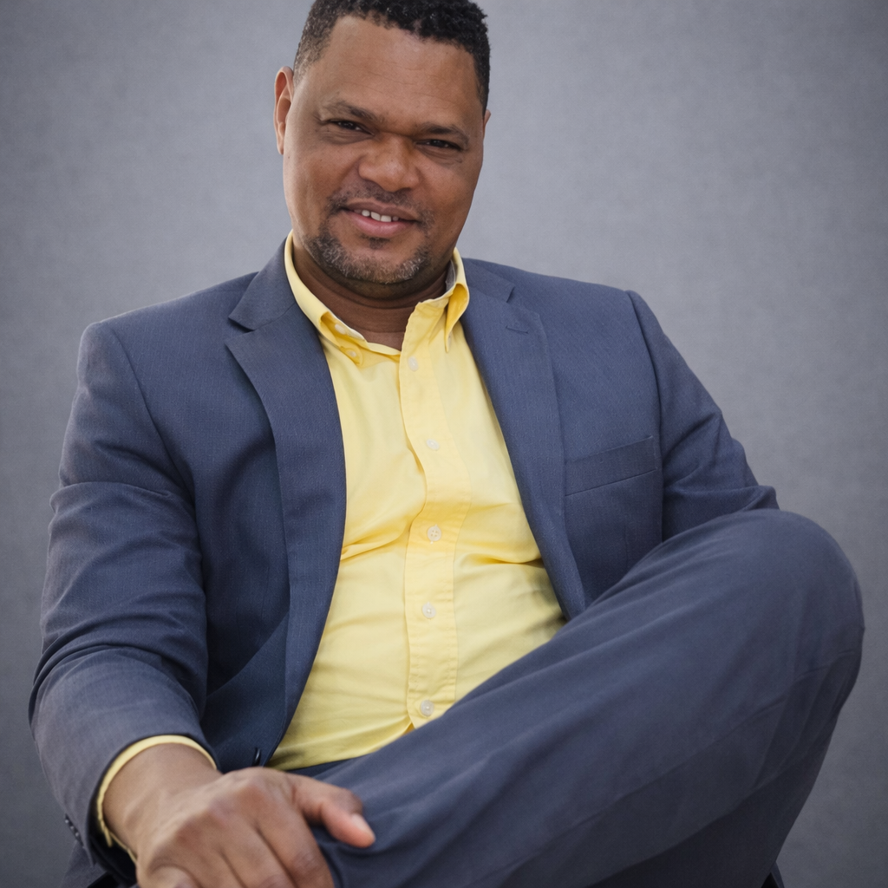

Acompañar a las personas en su desarrollo emocional, comunicativo y académico, integrando la psicología y la logopedia desde la ciencia, la empatía y el cuidado humano, mediante procesos terapéuticos y formativos personalizados que fortalecen la mente, el lenguaje y la confianza para vivir con mayor bienestar.
Cognivox Group
En Cognivox Group creemos que la mente y el lenguaje son pilares esenciales de la conexión humana y del bienestar integral, por ello, integramos la psicología y la logopedia desde un enfoque científico, empático y esperanzador, acompañando a las personas en su desarrollo emocional, comunicativo y personal a lo largo de cada etapa de la vida.
Nuestro propósito es ayudar a cada individuo a vivir con mayor equilibrio emocional y a expresarse con libertad, fortaleciendo el pensamiento, las emociones y la voz que construyen su bienestar y su identidad.
Acompañamos a niños, adolescentes y adultos mediante programas terapéuticos personalizados, diseñados para potenciar habilidades, superar dificultades y reconectarse con su entorno desde la confianza y la seguridad emocional.
En Cognivox Group entendemos que cuidar la mente es también cuidar la forma en que nos relacionamos con el mundo, y que comunicar es una forma profunda de sanar. Cada emoción, cada palabra y cada gesto forman parte de un proceso de crecimiento integral, donde mente, cuerpo y lenguaje se armonizan para transformar vidas.
Ser un referente en bienestar integral y formación especializada, reconocidos por transformar vidas a través del cuidado de la mente, el lenguaje y las emociones, e inspirar una práctica profesional ética, científica y profundamente humana.
- Empatía: acompañamos cada proceso con escucha, respeto y sensibilidad, reconociendo la historia y la singularidad de cada persona.
- Enfoque integral: entendemos el bienestar como la armonía entre mente, lenguaje, emociones y contexto.
- Profesionalismo: actuamos con ética, rigor científico y compromiso con la calidad del servicio.
- Humanización: ponemos a la persona en el centro de cada proceso terapéutico.
- Innovación: incorporamos estrategias terapéuticas y recursos tecnológicos actualizados.
- Trabajo interdisciplinario: integramos la psicología y la logopedia en un mismo camino de bienestar.
- Confidencialidad: garantizamos un entorno seguro, de respeto y confianza.
- Esperanza: creemos en el poder de cada emoción, pensamiento y palabra para transformar vidas.
- Excelencia científica y académica: basamos nuestra práctica en la evidencia científica, la actualización profesional continua y el rigor académico.
Nuestro equipo

Psic. María Altagracia Tolentino Terrero
Fundadora y CEO de Cognivox Group
Catedrática - Universidad Autónoma de Santo Domingo (UASD)
Máster en Psicología de la Educación | Máster en Logopedia Escolar
Especialista en Neuropsicología Educativa | Terapia del Habla y Lenguaje | Evaluación e Intervención Psicopedagógica | Psicología Positiva (BePositive) | Psicología Deportiva | Psicología Industrial y Organizacional | Coaching Educativo | Psicometría | Investigadora Científica

Dr. Sandino Adames Madé
Sub-Director de Cognivox Group
Catedrático - Universidad Autónoma de Santo Domingo (UASD)
Doctor en Educación Física y Entrenamiento Deportivo
Máster en Actividad Física y Salud
Experto Universitario en Entrenamiento Deportivo | Preparación Física | Psicomotricidad | Educación Física y Deporte | Instructor de Alto Rendimiento | Investigador Científico

Dr. Richard Felipe Almaguer López
Coordinador de Psicomotricidad de Cognivox Group
Docente - Instituto Superior De Formación Docente Salomé Ureña (ISFODOSU)
Doctor en Ciencias de la Cultura Física
Máster en Ciencias de la Educación Superior
Especialista en Entrenamiento Deportivo | Psicomotricidad | Detención de Potencialidades Deportivas | Educación Física Escolar | Investigador Científico

Lic. María Flores
Fisioterapeuta de Cognivox Group
Fisioterapeuta - Hospital Infantil Dr. Robert Reid Cabral
Especialista en Terapia Manual | Rehabilitación Musculoesquelética | Recuperación Postquirúrgica | Lesiones Deportivas | Reeducación Postural | Drenaje Linfático Manual

Psic. Nathali Cabán Germán
Psicóloga Clínica de Cognivox Group
Magíster en Psicopedagogía e Inclusión Educativa
Especialista en Evaluación Clínica | Evaluación del Estado de Salud Mental | Intervención Psicológica | Evaluación Psicopedagógica | Inclusión Educativa
Instalaciones